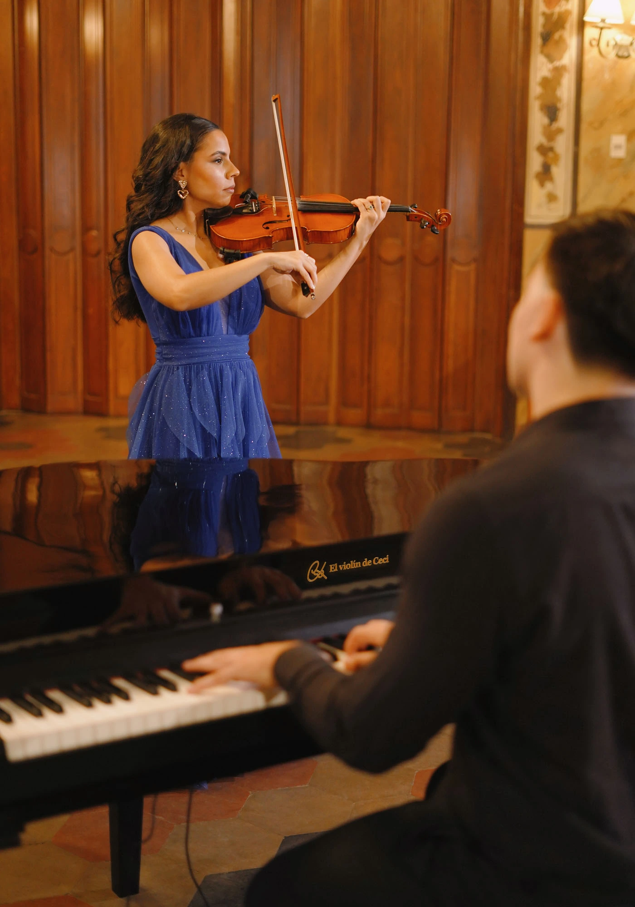
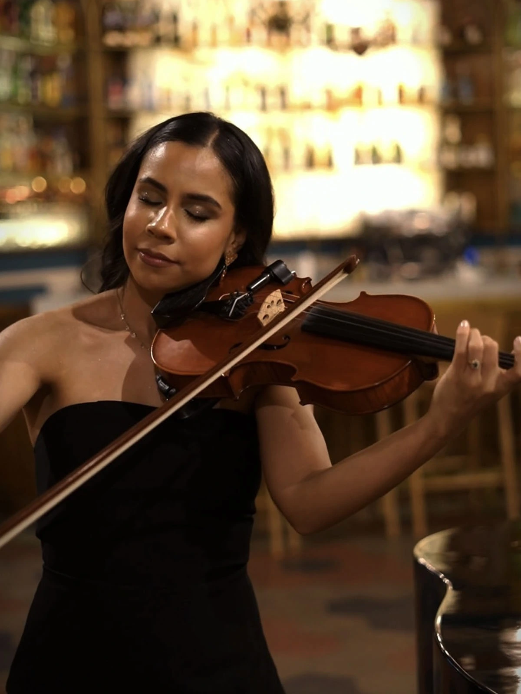

Reunión y diagnóstico
Se identifica la energía de la boda, los momentos clave y el rol que tendrá la música dentro de la experiencia general.
Música en vivo para bodas y eventos
Cecilia Lezcano crea experiencias musicales premium para ceremonias, recepciones y celebraciones especiales. Una propuesta desde Paraguay, disponible para viajar, donde el violín transforma cada momento en un recuerdo inolvidable.

Reconocimiento
El Violín de Ceci fue reconocido dentro del ecosistema de bodas de Latinoamérica en LAWA 2025. Ese respaldo refuerza una propuesta donde arte, emoción y experiencia de cliente trabajan juntas.
Qué es El Violín de Ceci
El Violín de Ceci es una marca premium creada por la violinista paraguaya Cecilia Lezcano. La propuesta combina arte, diseño de experiencia, consultoría musical y sensibilidad emocional para bodas y eventos de alto valor simbólico.
No compite por precio: compite por lo que hace sentir. Cada presentación se construye a partir de la historia de la pareja, el estilo del evento y la atmósfera que se desea recordar.
Cómo funciona
La música se planifica como una parte esencial del evento, no como un detalle agregado al final.
Se identifica la energía de la boda, los momentos clave y el rol que tendrá la música dentro de la experiencia general.
Se trabaja repertorio, timing y estilo para que entrada, votos, firma, salida o cóctel tengan una narrativa coherente.
La presentación en vivo suma sensibilidad, presencia visual y precisión para elevar la experiencia del evento.
Experiencias musicales
La elección del formato acompaña la escala emocional y visual del evento.
Ideal para ceremonias íntimas, entradas delicadas y bodas donde la emoción necesita cercanía y elegancia.
Una experiencia más profunda y cinematográfica, perfecta para ceremonias elegantes y cócteles con presencia musical.
La experiencia más completa. El piano de cola suma valor estético y convierte el evento en una escena editorial.
Herramienta diferencial
Entra aquí porque es el mejor puente entre inspiración y conversión. Ayuda a la pareja a descubrir el estilo emocional de su boda, ordena necesidades y genera una propuesta mucho más personalizada.
El test existente se mantiene completo, con toda su lógica, audios y resultados.
Galería
No rehice la estética visual: reorganicé el espacio para que las imágenes respiren mejor, cuenten una historia y sostengan el posicionamiento premium.
 Ceremonia al aire libre
Ceremonia al aire libre
 Entrada de la novia
Entrada de la novia
 Dúo con piano
Dúo con piano
 Detalle editorial
Detalle editorial
 Votos y silencios
Votos y silencios
 Salida de la ceremonia
Salida de la ceremonia

Sobre Ceci
Cecilia Lezcano proviene de una familia de músicos y desarrolló desde muy joven una relación profunda con el violín. Con el tiempo transformó esa formación en una propuesta boutique donde la música en vivo se convierte en diseño emocional.
Hoy, El Violín de Ceci acompaña bodas, eventos corporativos y celebraciones privadas con una mirada que une sensibilidad artística, branding y experiencia de cliente.
“No se trata de tocar durante una boda. Se trata de diseñar cómo se va a sentir ese recuerdo.”
Testimonios
Se mantiene intacto el módulo de reseñas y testimonios, ahora mejor integrado con el resto del recorrido de la marca.
“La música convirtió nuestra ceremonia en un momento mágico. No era solo música: era emoción pura.”
Laura & Andrés“Desde la primera reunión entendimos que Ceci no solo tocaba el violín. Diseñó la experiencia completa.”
Sofía & Martín“El momento de la entrada fue simplemente inolvidable. Se sintió elegante, íntimo y profundamente nuestro.”
Mariana & FelipePrensa y medios
Esta sección suma autoridad, credibilidad y contexto de marca premium.
Presencia editorial vinculada a marca, innovación y posicionamiento.
5DíasUna nota ideal para reforzar visión de negocio, diferenciación y propuesta de valor.
PausaContexto de marca y sensibilidad artística en medios paraguayos.
Blog de Ceci
El blog refuerza expertise, sensibilidad y SEO. Sirve para wedding planners, novios y marcas que quieren entender mejor la propuesta detrás de la experiencia.
Para wedding planners y marcas
La web ahora deja más claro qué ofrece Ceci, cómo se reserva y por qué su propuesta agrega valor real al evento. Esto reduce fricción para planners, venues y aliados.
Contacto y reserva
La nueva estructura hace que el contacto sea visible desde el inicio y vuelva a aparecer cuando la intención de compra es más alta.